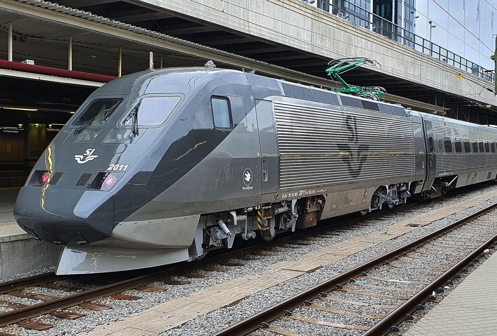
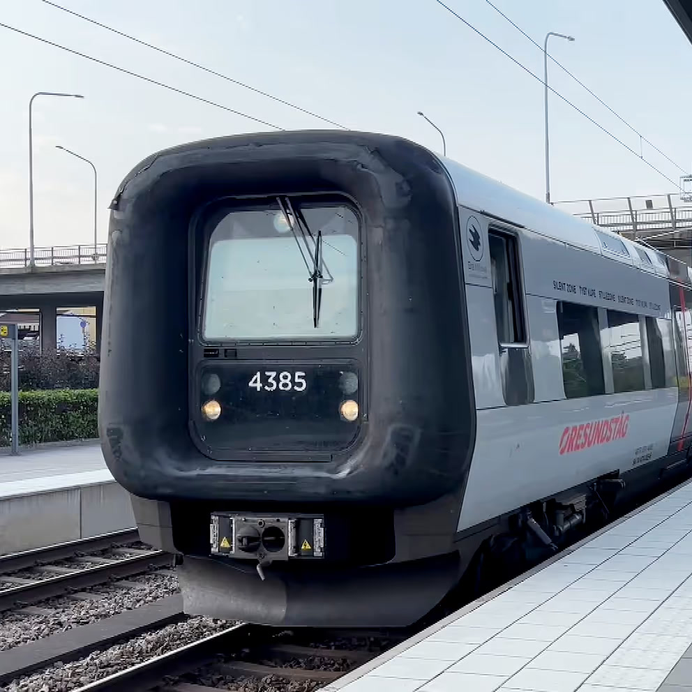
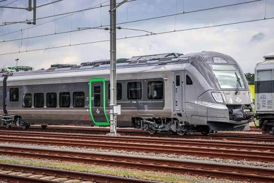

Några svenska tåg
Svenska tåg utgör ryggraden i landets kollektivtrafik och binder samman städer från Malmö i söder till Riksgränsen i norr. Järnvägsnätet trafikeras av flera olika operatörer, där det statliga bolaget SJ är det mest välkända, vid sidan av regionala aktörer och privata alternativ som VR Snälltåget. De svenska fjärrtågen, särskilt snabbtåget X2000, är kända för sin höga komfort och goda arbetsmiljö för pendlare. Samtidigt står tågtrafiken i Sverige inför återkommande utmaningar; underhållsskulder på spåren och extremt vinterväder leder periodvis till förseningar, vilket har gjort punktligheten till en ständigt aktuell debattfråga. Trots detta förblir tåget ett av de mest populära och miljövänliga sätten att resa genom det skiftande svenska landskapet.

X2000
X2000 är Sveriges mest kända snabbtåg, som lanserades av SJ i september 1990 för att korta restiderna mellan landets största städer. Tåget revolutionerade den svenska järnvägen genom sin unika korglutningsteknik, vilket gör att det kan hålla en hög hastighet på drygt 200 km/h även i skarpa kurvor utan att passagerarkomforten försämras. Modellen, som tekniskt heter X2, trafikerar främst de vältrafikerade sträckorna Stockholm–Göteborg och Stockholm–Malmö.

Öresundståg
Öresundståg X31 är en elektrisk motorvagnstyp som utgör ryggraden i tågtrafiken över Öresundsbron mellan Sverige och Danmark. Tågen är speciellt anpassade för internationell trafik och kan hantera både det svenska och det danska signalsystemet samt skifta mellan ländernas olika strömstyrkor under färd. Karaktäristiskt för X31 är de gummiklädda gummitutorna i ändarna, vilket gör det smidigt att koppla ihop flera tågsätt för att möta hög efterfrågan i rusningstid.

SJ Regional
X45 är beteckningen på SJ:s nya regionaltåg som tillverkas av den spanska tågtillverkaren CAF. Tåget, som internt har gått under arbetsnamnet ”Zäta”, är utformat som en elmotorvagn med fem vagnar och rymmer cirka 330 sittplatser. Det har en topphastighet på 200 km/h och är särskilt anpassat för nordiska vinterförhållanden med fokus på god tillgänglighet och cykelplatser.